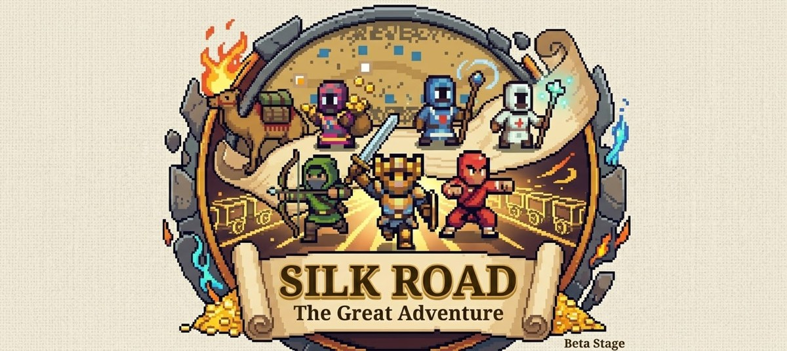

Silk Road: The Great Adventure
Cruza la Ruta de la Seda de Chang'an a Antioquía. Un MMORPG de navegador de la vieja escuela, donde cada nivel se gana peleando.
8 clases12 ciudades8 jugadores por party500 miembros por gremioGratis, sin descargas
Eventos
Así se juega
Un mundo hardcore: los drops son difíciles, los atributos suben en pequeños porcentajes y nadie recibe premios por entrar.
Combate
- 8 clases: Mercader, Caballero, Mago, Arquero, Sanador, Monje, Druida y Guerrera
- Golpes críticos y combos que se ven en pantalla
- El Caballero golpea en círculo a las 8 casillas que lo rodean
Mundo
- 12 ciudades, cada una con sus tiendas
- Cuevas visibles en el mapa; los secretos solo llegan como rumores
- Ciclo de día y noche, clima y eventos por fecha real
Comunidad
- Party de 8 con bonus desde 3 clases distintas
- Gremios por 10 💎: etiqueta, invitaciones, tesoro y chat
- Chat global, mensajes privados y hasta 30 amigos
Economía
- Mercado de jugadores en tiempo real
- Boutique de 32 apariencias; las gemas solo compran apariencias y mejoras
- Servidor que verifica oro, objetos y mercado

La Cripta del Viajero
La entrada está a unos cuatro minutos a pie de la ciudad. Cinco pisos de pasillos anchos y cavernas, con escaleras que suben y bajan.

Chat y amigos en el mismo panel
Toca el botón de chat para hablar con todos, escribir en privado o ver quién de tus amigos está en línea. Toca el nombre de cualquiera para escribirle, invitarlo al gremio o agregarlo.
Elige tu héroe
Cada clase juega distinto. Mira sus números y su estilo antes de decidir.
Cargando…